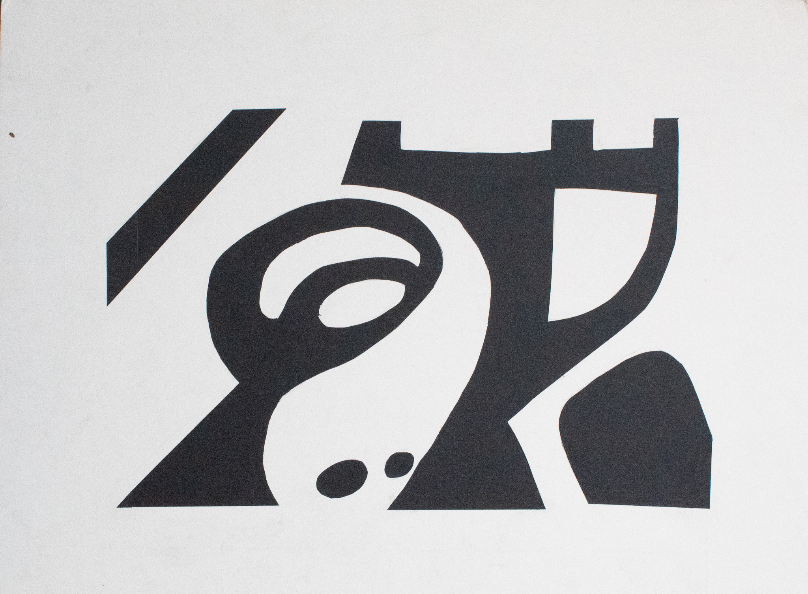
This piece is working with Positive and Nevative space to create the image of a car (specifically a Volkswagon Beatle)
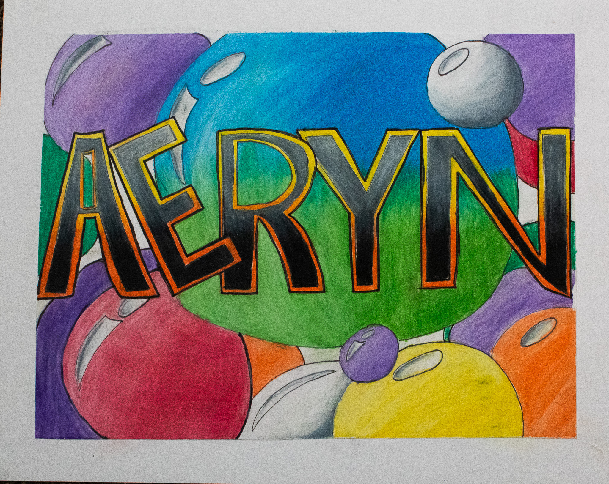This piece it colored pencil and ink. The goal was to have a name plate that represents me.
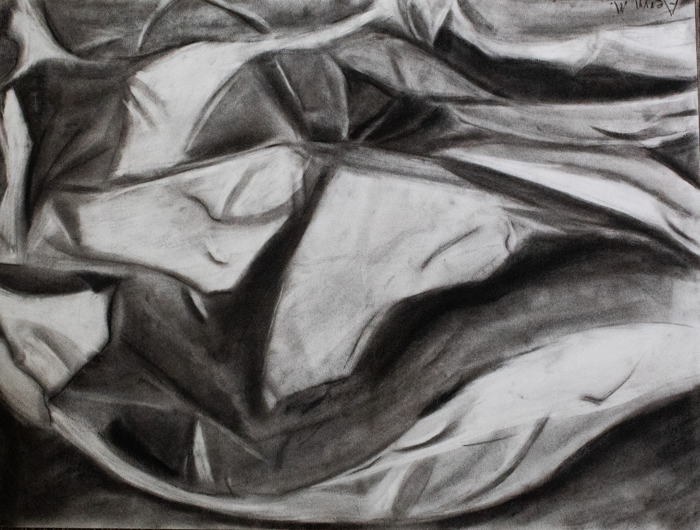Cloth drawing charcoal on paper
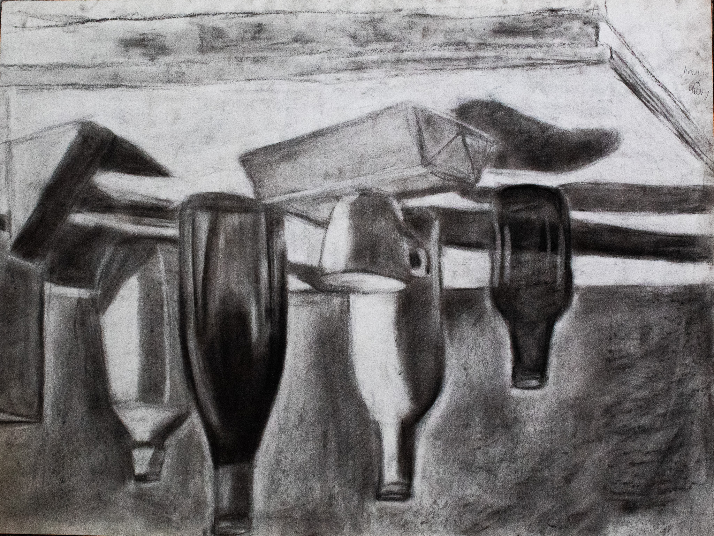still life charcoal on paper
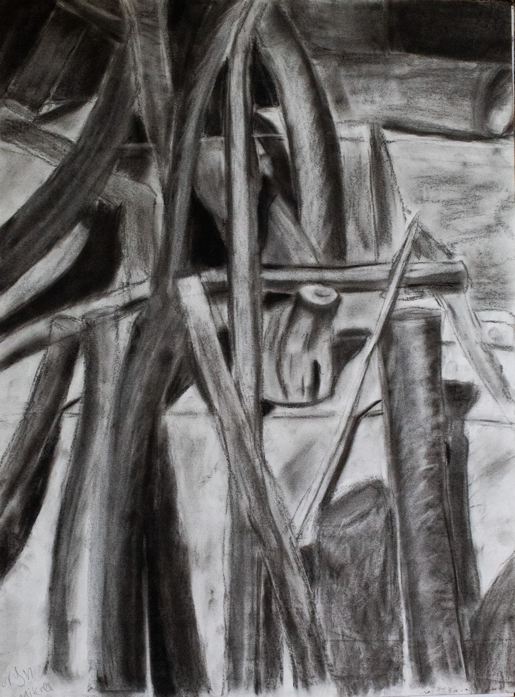Stick still life charcoal on paper
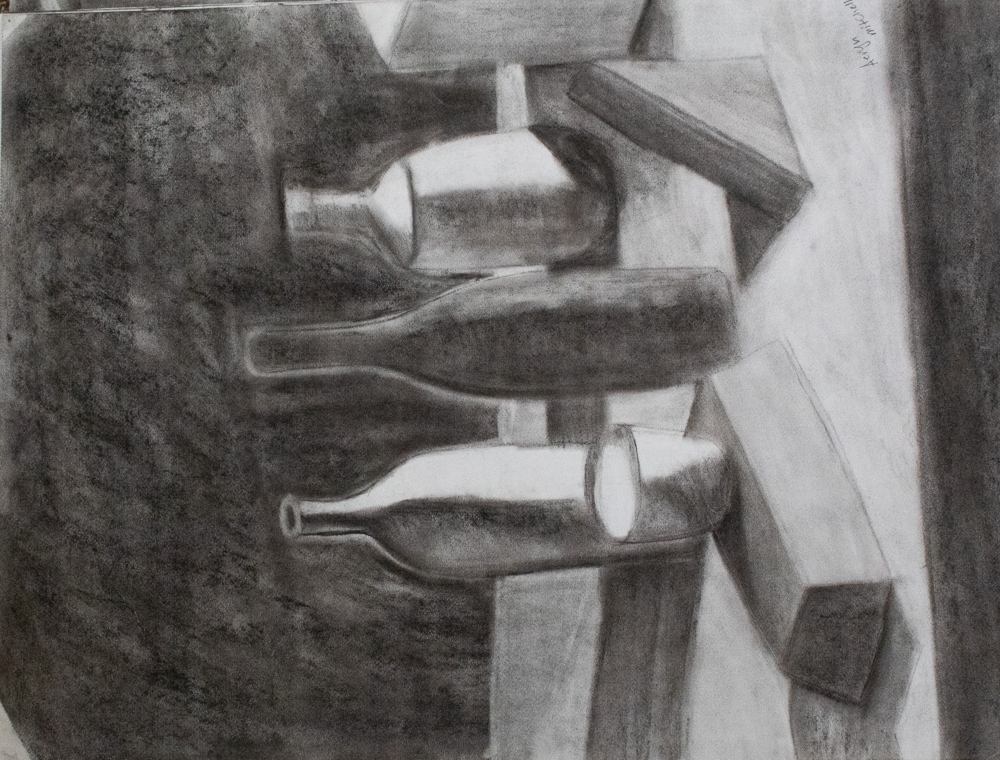still life charcoal on paper
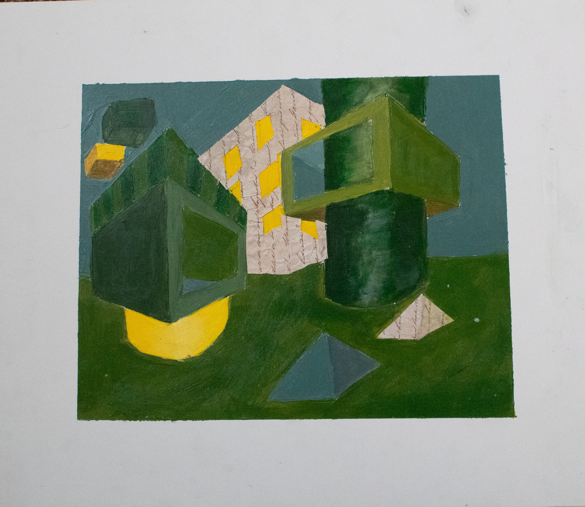
This is a combination of acrylic and Decopodge to create a landscape of 3d figures.
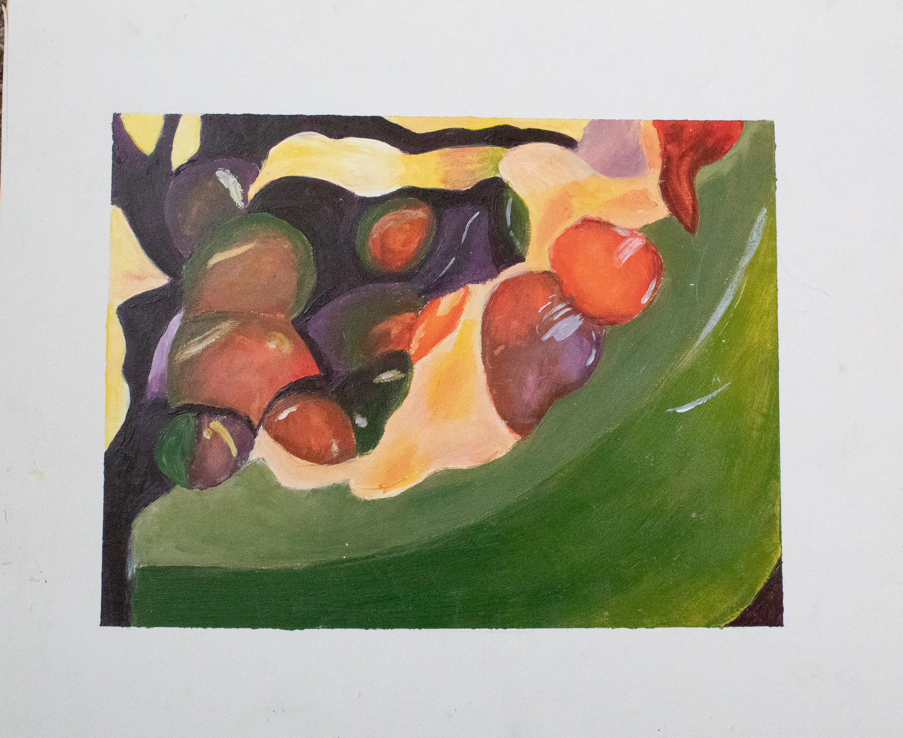This is an acrylic painting of a pomegranate zoomed in close and changes to unrealistic colors to confuse the viewer.
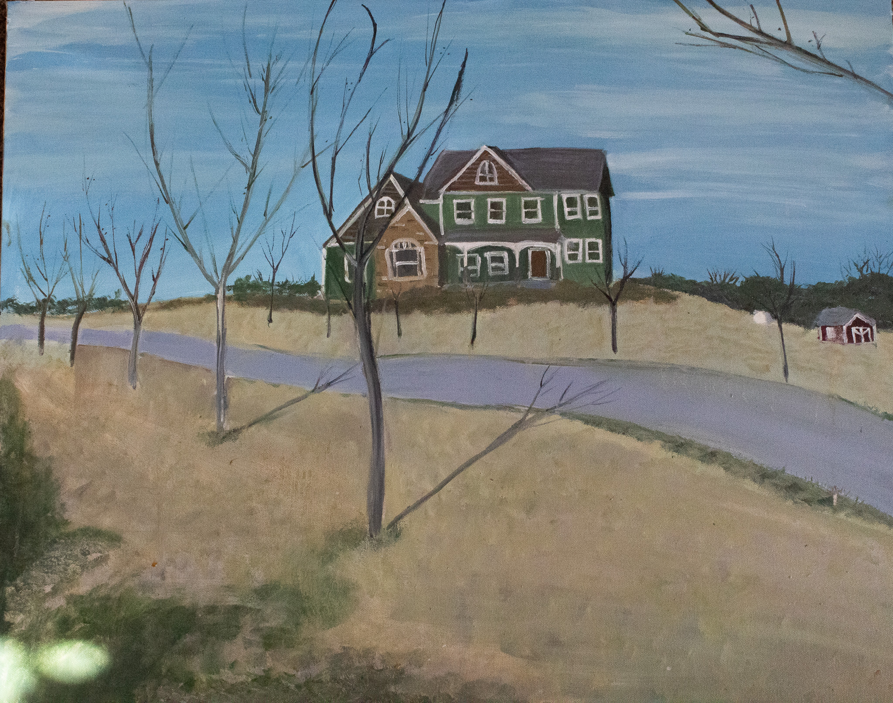This painting is oil on canvas.
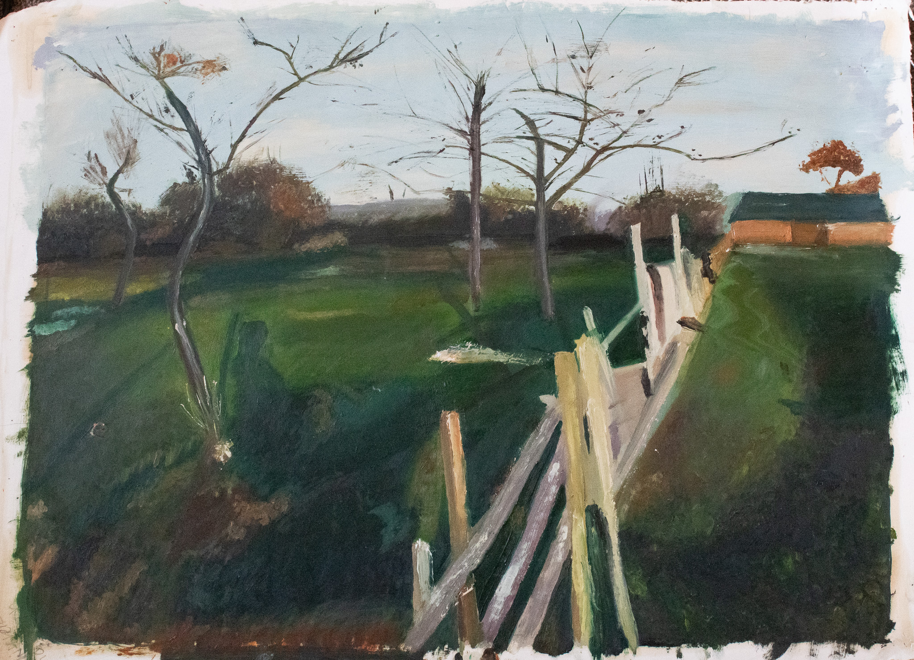This painting is oil on paper. It is a recreation of a painting by(IDK will find later)
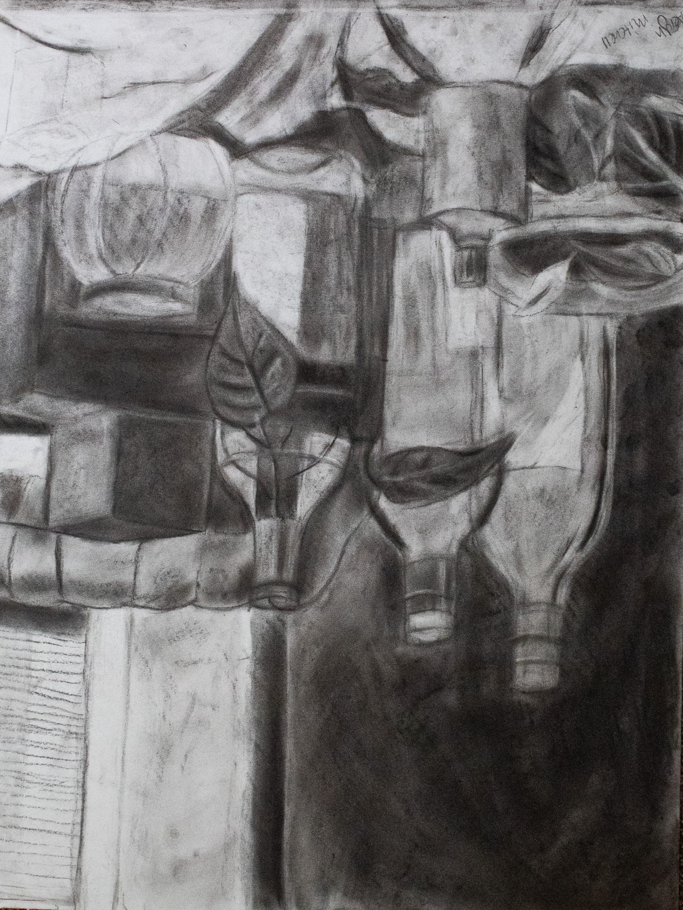Still life Charcoal on paper
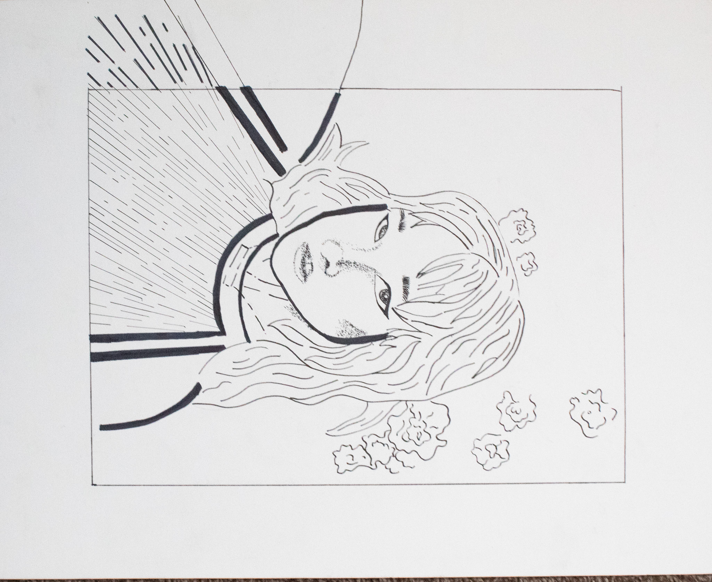Self Portraint ink on paper